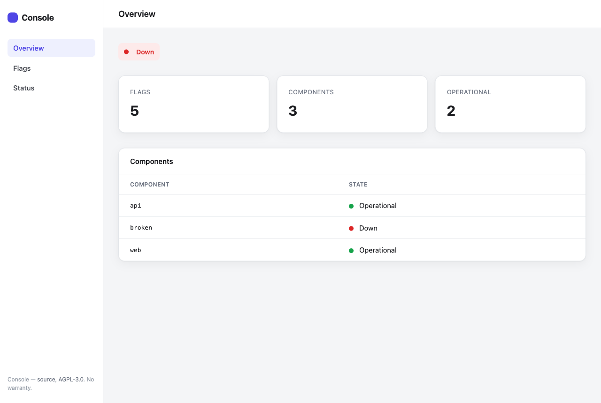
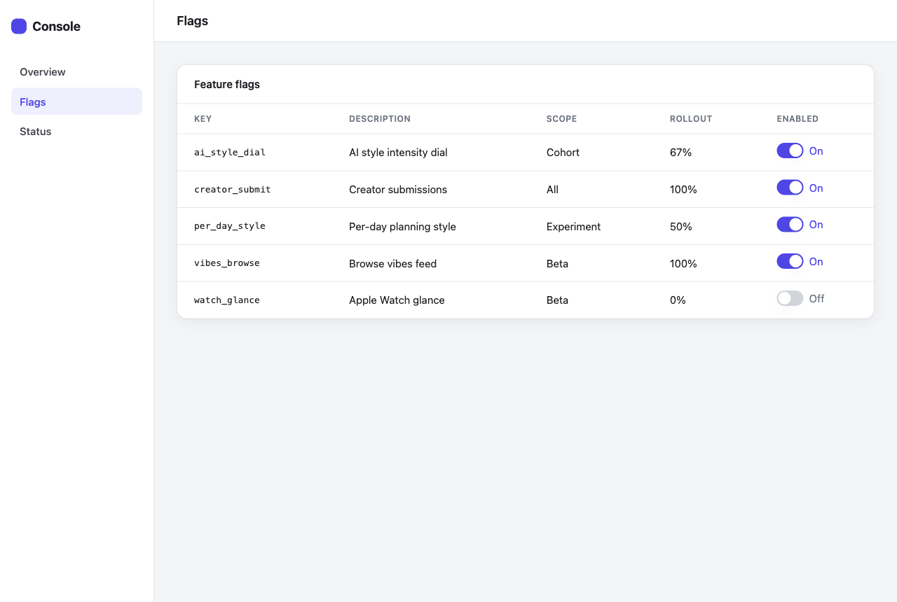
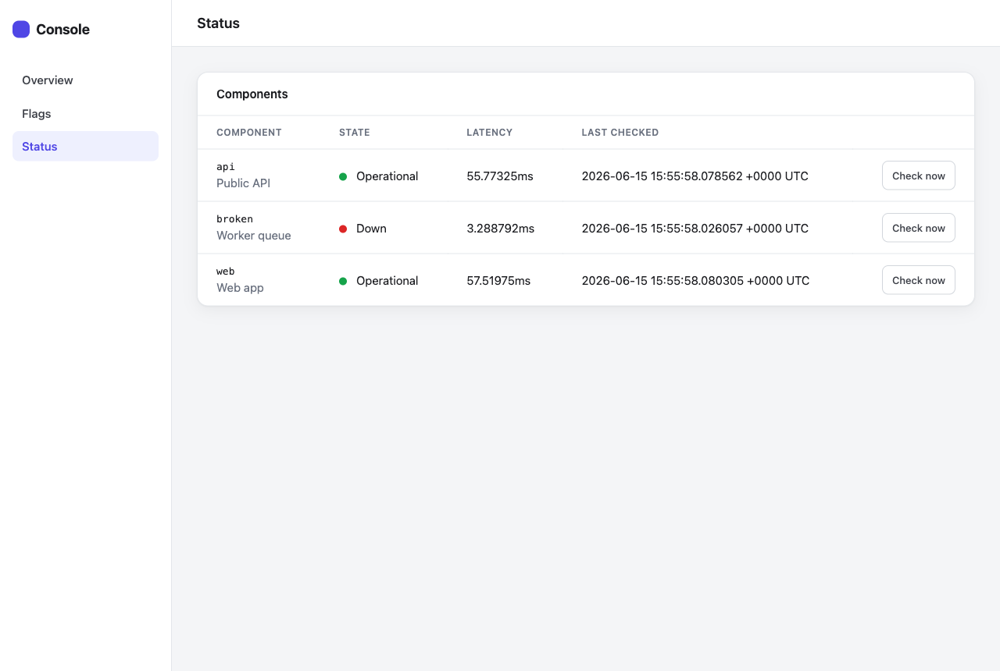

Console combines feature flags and status monitoring in a single static Go binary with an embedded SQLite database. Ship features safely behind deterministic rollouts, watch your services from one dashboard and JSON API, and onboard an app in minutes — by hand or with an LLM.
Pure-Go SQLite (no cgo) means a truly static binary you can drop on any host. Start with ./console serve; move to Postgres when you outgrow a node.
Four seams — storage, status providers, notifiers, and LLM providers — are out-of-process plugins the host launches over gRPC. Add or swap a capability by dropping a console-plugin-* binary, no core recompile.
The dashboard is just a client of the same HTTP API your apps use. The same (flag, subject) always resolves the same way.
From source to a running dashboard in four commands. Needs Go 1.22+.
# 1. Build the single static binary
make build # or: go build -o console ./cmd/console
# 2. Create a flag and evaluate it for a user
./console flag create new-dashboard -desc "New dashboard UI" -scope beta -rollout 50 -enabled
./console flag eval new-dashboard -subject user-123 -attr audience=beta
# 3. Add a service to monitor, then check it
./console status add api -url https://example.com/health -name "Public API"
./console status check api
# 4. Start the dashboard + API
./console serve # http://localhost:8080
Prefer to be guided? Run console onboard for an interactive wizard, or
console onboard -ai -name "Acme" -desc "..." to have Claude draft the plan.
See onboarding.
A server-rendered dashboard (htmx) on top of the same API your apps call.



Two primitives, one engine each.
A flag has a scope (the audience it applies to) and a rollout (the % of in-scope subjects who get it). Evaluation is deterministic per subject via FNV hashing, so a rollout is stable across calls and processes.
| Scope | In scope when… |
|---|---|
all | always |
beta / alpha | attribute audience equals the scope, or beta/alpha == "true" |
cohort | attribute cohort equals the flag's cohort |
experiment | always in scope; the linked experiment is metadata |
Boolean flags resolve to on/off. Multivariate flags carry weighted
variants and resolve to one deterministically. Read the flags guide →
A component is a monitored part of your app (an API, a worker, a database),
checked by a named provider. The built-in http provider probes a URL:
| Result | State |
|---|---|
2xx, or a matching expect_status | operational |
| any other HTTP response | degraded |
| connection error / timeout | down |
missing url | unknown |
A snapshot aggregates the latest check per component into one overall state
(worst-wins; unknown never masks a real outage).
Read the status guide →
Deep-dive references for every part of Console.
Install, create your first flag and check, serve, and onboard.
Scopes, rollout, determinism, multivariate, CLI + API examples.
Components, providers, checks, and snapshot aggregation.
Human vs AI-Assisted modes, the plan, applying, and the generated guide.
Full endpoint reference with request/response JSON examples.
Operate Console from an AI agent: console mcp over the Model Context Protocol.
Package layout, the interface seams, data flow, and the single-binary rationale.
The out-of-process gRPC plugin model: four seams, the catalog, and how to write one.
Build, test, conventions, and how to land a PR.